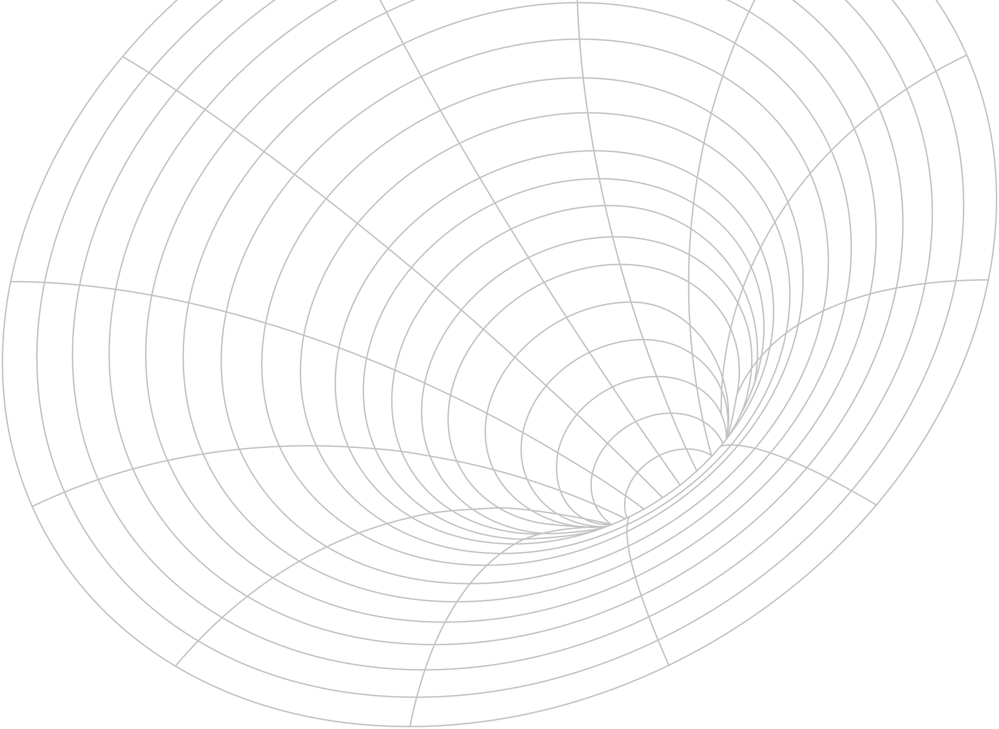
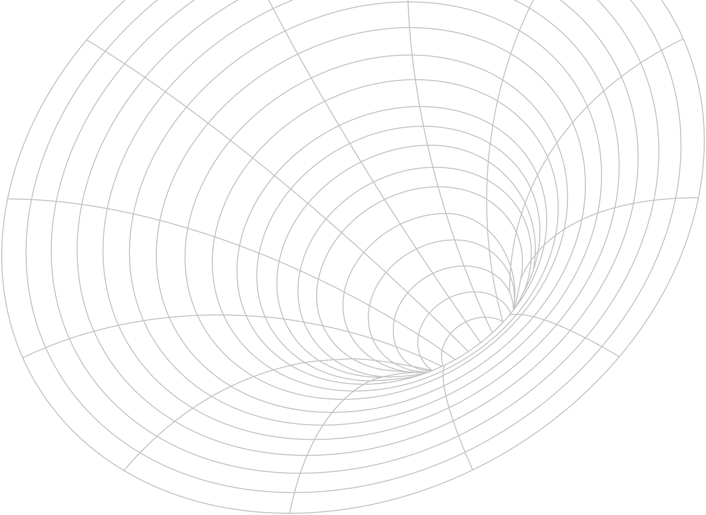

SinkHole
Sinkhole Data View
보이지 않는 위험을 시각화하여 제공합니다.
땅속에서 예고 없이 발생하는 위협, 싱크홀
싱크홀은 지반이 갑작스럽게 꺼지면서 지표면에 구멍이 생기는 현상입니다. 지하의 공동(空洞), 지질 약화, 지하수 침식, 노후 인프라 등 다양한 원인으로 발생하며, 인명과 재산에 큰 피해를 줄 수 있습니다. 이러한 사고는 발생 이후보다, 사전에 인식하고 대비하는 것이 더욱 중요합니다. 이 페이지는 싱크홀 관련 데이터를 시각화하여 예상 발생 지역과 과거 발생 이력을 한눈에 확인할 수 있도록 제공합니다. 의심스러운 땅 꺼짐 현상을 발견했을 경우, 빠르게 신고하는 것이 피해를 줄이는 가장 좋은 방법입니다.